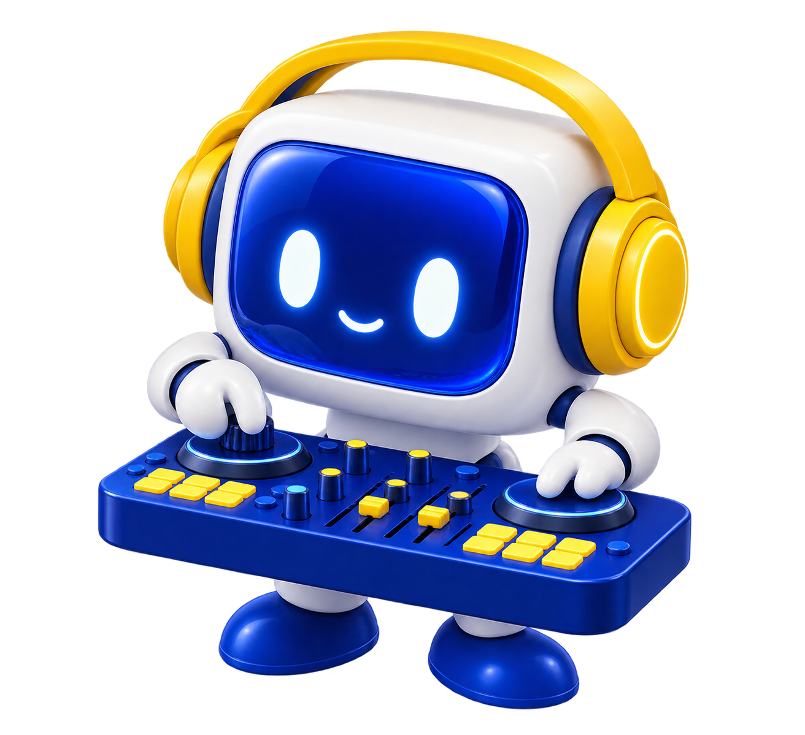

TUS IDEAS.
OTRO
UNIVERSO.
Jugá con las probabilidades, encontrá tu próximo loop y llevátelo a tu DAW. Este estudio es tuyo.
UN EXPERIMENTO MUSICAL PARA QOLLAB / VOL. 01
TU COPILOTO DE LOOPS ↗Sesión 001
De estados a sonidos
q3 q2 q1 q0Probabilidades de un circuito simulado en tu navegador.
Armá tu mezcla.
Un pulso grave para sostener el loop. Bajalo a cero para silenciar.
La melodía nace del circuito. Las capas base y los efectos son clásicos. El WAV incluye la mezcla y los efectos; el MIDI conserva notas e instrumentos para editar en tu DAW.
Un circuito.
Muchas posibilidades.
Prepará
Las rotaciones definen las amplitudes. La fase y las puertas controladas cambian la distribución conjunta.
Medí
Cada estado de cuatro bits se traduce en altura, silencio y acento. La correlación mostrada es información mutua de mediciones.
Producí
Escuchá una secuencia de esa distribución. Exportá el MIDI y hacela tuya en Ableton, FL Studio o tu DAW favorito.
Ver el circuito y el alcance del experimento +
Orden de bits: q3 q2 q1 q0. q0 y q1 eligen cuatro alturas; q2 decide nota o silencio; q3 cambia registro y acento. Escala: C, Eb, F, G, Bb, C, Eb, F. El beat, la escala y el sintetizador son clásicos. La densidad final también depende de las puertas de enlace.
La demo usa un simulador clásico de estados cuánticos. La web envía el circuito validado con Qiskit a la API de IonQ y recibe las probabilidades de su simulador cloud. El script Python también permite ejecutarlo mediante el proveedor Qiskit-IonQ. Ambos usan el mismo circuito; no es una ejecución en hardware. El loop se muestrea clásicamente de las probabilidades devueltas por IonQ, o del histograma al importar un archivo. No se utiliza un orden temporal de mediciones. No afirmamos ventaja cuántica ni superioridad musical frente a un generador clásico.